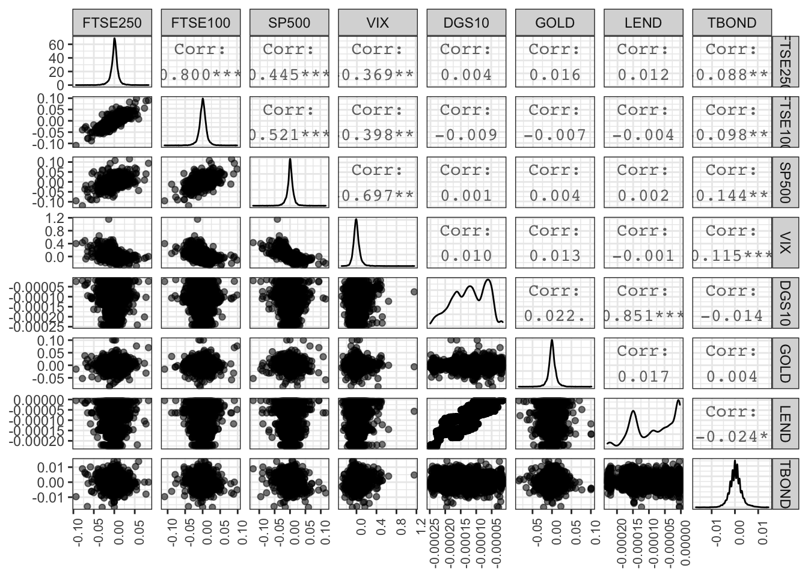
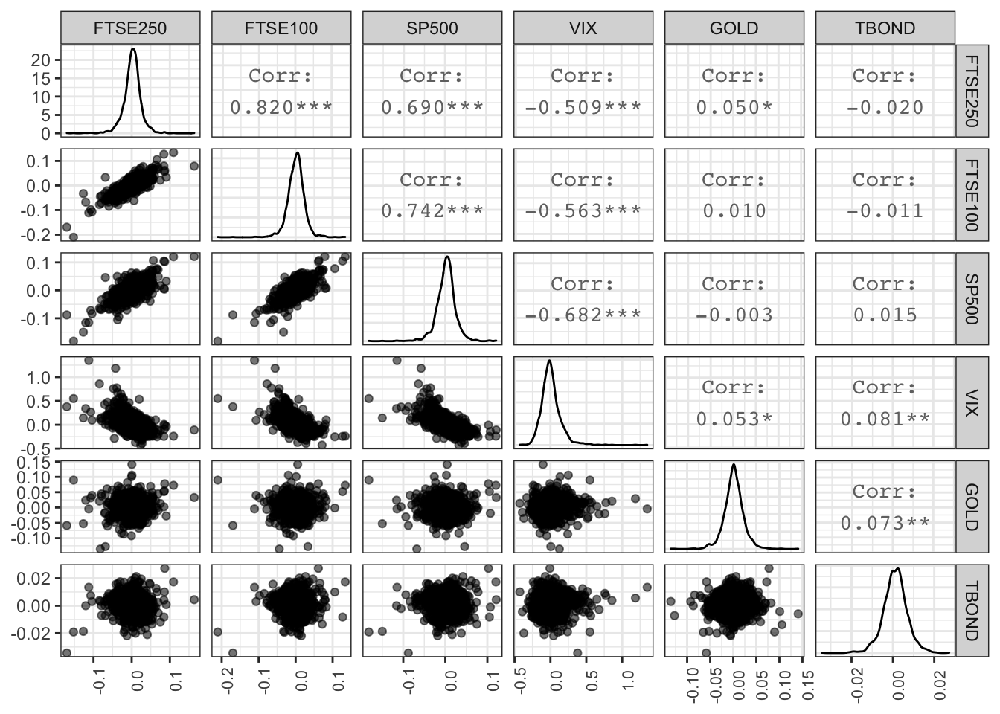
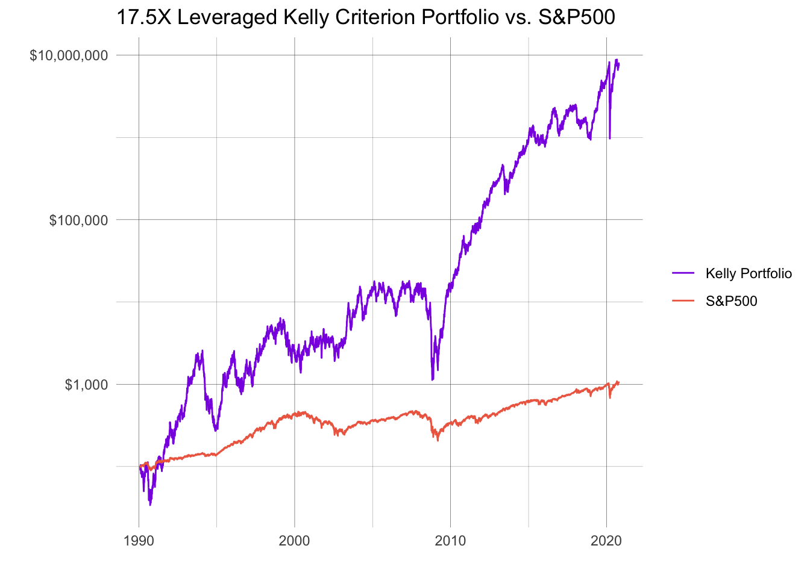

tickers <- c("^FTSE","^FTMC","VBMFX","^GSPC","^VIX")
partial_data <- tq_get(tickers, from = "1990-02-01")%>%
group_by(symbol)
vix <- partial_data %>%
filter(symbol == "^VIX")
gold <- tq_get(x = c("GOLDAMGBD228NLBM"), get = "economic.data", from = "1990-02-01") %>%
rename(adjusted = price) %>%
group_by(symbol)
leverage <- tq_get(x = c("DGS10","IR3TIB01USM156N"), get = "economic.data", from = "1990-02-01") %>%
rename(daily.returns = price) %>%
group_by(symbol) %>%
mutate (daily.returns = (daily.returns/(-36600)))
riskfree <- tq_get(x = c("DGS10"), get = "economic.data", from = "1990-02-01") %>%
rename(daily.returns = price) %>%
group_by(symbol) %>%
mutate (daily.returns = (daily.returns/100+1)^(1/365))
riskfree## # A tibble: 8,012 x 3
## # Groups: symbol [1]
## symbol date daily.returns
## <chr> <date> <dbl>
## 1 DGS10 1990-02-01 1.00
## 2 DGS10 1990-02-02 1.00
## 3 DGS10 1990-02-05 1.00
## 4 DGS10 1990-02-06 1.00
## 5 DGS10 1990-02-07 1.00
## 6 DGS10 1990-02-08 1.00
## 7 DGS10 1990-02-09 1.00
## 8 DGS10 1990-02-12 1.00
## 9 DGS10 1990-02-13 1.00
## 10 DGS10 1990-02-14 1.00
## # … with 8,002 more rowsdate_sequence <- seq(as.Date("1990-02-01"), as.Date("2020/09/16"), by = "day")
date_frame <- data.frame(date = date_sequence) %>%
mutate(joiner = 1)
leverage_wide <- leverage %>%
spread(key = symbol, value = daily.returns)
indicator <- full_join(date_frame, leverage_wide, by = "date")
leverage1 <- na.locf(indicator, fromLast = TRUE)
leverage2 <- subset(leverage1, select = -c(joiner))
leverage <- leverage2 %>%
rename("LEND" = "IR3TIB01USM156N") %>%
pivot_longer(cols=2:3, names_to = "symbol", values_to = "daily.returns" )#calculate daily returns
myStocks_returns_daily_a <- partial_data %>%
tq_transmute(select = adjusted,
mutate_fun = periodReturn,
period = "daily",
type = "arithmetic",
col_rename = "daily.returns",
cols = c(nested.col))
myStocks_returns_daily_b <- gold %>%
tq_transmute(select = adjusted,
mutate_fun = periodReturn,
period = "daily",
type = "arithmetic",
col_rename = "daily.returns",
cols = c(nested.col))
my_Stocks_returns_daily <- full_join(leverage, full_join(myStocks_returns_daily_a, myStocks_returns_daily_b))
#calculate weekly returns
myStocks_returns_weekly_a <- partial_data %>%
tq_transmute(select = adjusted,
mutate_fun = periodReturn,
period = "weekly",
type = "arithmetic",
col_rename = "monthly.returns",
cols = c(nested.col))
myStocks_returns_weekly_b <- gold %>%
tq_transmute(select = adjusted,
mutate_fun = periodReturn,
period = "weekly",
type = "arithmetic",
col_rename = "monthly.returns",
cols = c(nested.col))
my_Stocks_returns_weekly <- full_join(myStocks_returns_weekly_a, myStocks_returns_weekly_b)
#calculate monthly returns
myStocks_returns_monthly_a <- partial_data %>%
tq_transmute(select = adjusted,
mutate_fun = periodReturn,
period = "monthly",
type = "arithmetic",
col_rename = "monthly.returns",
cols = c(nested.col))
myStocks_returns_monthly_b <- gold %>%
tq_transmute(select = adjusted,
mutate_fun = periodReturn,
period = "monthly",
type = "arithmetic",
col_rename = "monthly.returns",
cols = c(nested.col))
my_Stocks_returns_monthly <- full_join(myStocks_returns_monthly_a, myStocks_returns_monthly_b)# widen the data for analysis
returns_wide <- my_Stocks_returns_daily %>%
spread(key = symbol, value = daily.returns) %>% # keep period returns grouped by symbol
rename(
FTSE100 = `^FTSE`,
FTSE250 = `^FTMC`,
SP500 = `^GSPC`,
TBOND = VBMFX,
VIX = `^VIX`,
GOLD = `GOLDAMGBD228NLBM`,
LEND = `LEND`
)
riskfree_wide <- riskfree %>%
spread(key = symbol, value = daily.returns) # keep period returns grouped by symbol
riskfree_wide[is.na(riskfree_wide)] <- 1
riskfree_wide_cumulative <- riskfree_wide %>%
mutate(DGS10 = cumprod(DGS10))
riskfree_monthly_return <- riskfree_wide_cumulative %>%
tq_transmute(select = DGS10,
mutate_fun = periodReturn,
period = "monthly",
type = "arithmetic",
col_rename = "monthly.returns",
cols = c(nested.col))
returns_wide_correlation <- returns_wide
returns_wide[is.na(returns_wide)] <- 0
returns_wide## # A tibble: 11,205 x 9
## date FTSE250 FTSE100 SP500 VIX DGS10 GOLD LEND
## <date> <dbl> <dbl> <dbl> <dbl> <dbl> <dbl> <dbl>
## 1 1990-02-01 0. 0 0 0 -2.30e-4 0 -2.25e-4
## 2 1990-02-02 2.98e-3 0.00396 0.00648 -0.0221 -2.32e-4 0.00992 -2.28e-4
## 3 1990-02-03 0. 0 0 0 -2.33e-4 0 -2.28e-4
## 4 1990-02-04 0. 0 0 0 -2.33e-4 0 -2.28e-4
## 5 1990-02-05 1.93e-4 -0.00284 0.00281 0.00905 -2.33e-4 0.00335 -2.28e-4
## 6 1990-02-06 -6.99e-3 -0.0116 -0.00660 0.00611 -2.34e-4 0.00633 -2.28e-4
## 7 1990-02-07 -3.81e-3 -0.00590 0.0124 -0.0162 -2.33e-4 -0.00356 -2.28e-4
## 8 1990-02-08 4.21e-3 0.0102 -0.00237 -0.0214 -2.32e-4 -0.00333 -2.28e-4
## 9 1990-02-09 -4.62e-3 -0.00746 0.00198 -0.00337 -2.27e-4 0 -2.28e-4
## 10 1990-02-10 0. 0 0 0 -2.30e-4 0 -2.28e-4
## # … with 11,195 more rows, and 1 more variable: TBOND <dbl>returns_wide_weekly <- my_Stocks_returns_weekly %>%
spread(key = symbol, value = monthly.returns) %>% # keep period returns grouped by symbol
rename(
FTSE100 = `^FTSE`,
FTSE250 = `^FTMC`,
SP500 = `^GSPC`,
TBOND = VBMFX,
VIX = `^VIX`,
GOLD = `GOLDAMGBD228NLBM`
)
returns_wide_monthly <- my_Stocks_returns_monthly %>%
spread(key = symbol, value = monthly.returns) %>% # keep period returns grouped by symbol
rename(
FTSE100 = `^FTSE`,
FTSE250 = `^FTMC`,
SP500 = `^GSPC`,
TBOND = VBMFX,
VIX = `^VIX`,
GOLD = `GOLDAMGBD228NLBM`
)#determine the correlation and standard deviation of data
returns_wide_correlation[-1] %>% #exclude "Date", the first column, from the correlation matrix
GGally::ggpairs(aes(alpha=0.2)) +
theme_bw()+
theme(axis.text.x = element_text(angle = 90, size=8),
axis.title.x = element_blank())
returns_wide_weekly[-1] %>% #exclude "Date", the first column, from the correlation matrix
GGally::ggpairs(aes(alpha=0.2)) +
theme_bw()+
theme(axis.text.x = element_text(angle = 90, size=8),
axis.title.x = element_blank())
returns_wide_monthly[-1] %>% #exclude "Date", the first column, from the correlation matrix
GGally::ggpairs(aes(alpha=0.2)) +
theme_bw()+
theme(axis.text.x = element_text(angle = 90, size=8),
axis.title.x = element_blank())
options(digits=6)
summary(returns_wide_correlation[-1], format(round = 10))## FTSE250 FTSE100 SP500 VIX
## Min. :-0.09 Min. :-0.11 Min. :-0.12 Min. :-0.30
## 1st Qu.: 0.00 1st Qu.:-0.01 1st Qu.: 0.00 1st Qu.:-0.04
## Median : 0.00 Median : 0.00 Median : 0.00 Median : 0.00
## Mean : 0.00 Mean : 0.00 Mean : 0.00 Mean : 0.00
## 3rd Qu.: 0.00 3rd Qu.: 0.01 3rd Qu.: 0.01 3rd Qu.: 0.03
## Max. : 0.08 Max. : 0.10 Max. : 0.12 Max. : 1.16
## NA's :3348 NA's :3417 NA's :3466 NA's :3466
## DGS10 GOLD LEND TBOND
## Min. :-2e-04 Min. :-0.09 Min. :-2e-04 Min. :-0.02
## 1st Qu.:-2e-04 1st Qu.: 0.00 1st Qu.:-1e-04 1st Qu.: 0.00
## Median :-1e-04 Median : 0.00 Median :-1e-04 Median : 0.00
## Mean :-1e-04 Mean : 0.00 Mean :-1e-04 Mean : 0.00
## 3rd Qu.:-1e-04 3rd Qu.: 0.00 3rd Qu.: 0e+00 3rd Qu.: 0.00
## Max. : 0e+00 Max. : 0.10 Max. : 0e+00 Max. : 0.01
## NA's :34 NA's :3444 NA's :34 NA's :3466sd(returns_wide_correlation$FTSE250)## [1] NAsd(returns_wide_correlation$FTSE100)## [1] NAsd(returns_wide_correlation$SP500)## [1] NAsd(returns_wide_correlation$VIX)## [1] NAsd(returns_wide_correlation$leverage)## [1] NAsd(returns_wide_correlation$GOLD)## [1] NAsd(returns_wide_correlation$TBOND)## [1] NAquantile(vix$adjusted, probs = c(0,0.1,0.2,0.3,0.4,0.5,0.6,0.7,0.8,0.9,1))## 0% 10% 20% 30% 40% 50% 60% 70% 80% 90% 100%
## 9.14 11.97 13.05 14.33 15.83 17.38 19.41 21.54 24.33 28.90 82.69# Using optimized Kelly Criterion parameters, build portfolio and run portfolio from 1990 to 2020
wealthplot1 <- returns_wide %>%
mutate(
portfolio_growth = (1.61814 * SP500) + (0.00000 * FTSE100) + (1.20082 * FTSE250) + (15.70123 * TBOND) + (LEND * 17.52019),
portfolio_growth_summation = 100 * cumprod(1 + portfolio_growth),
sp500_growth_summation = 100 * cumprod(1 + SP500)
) %>%
arrange(desc(date))
# I dont like adding geomLine1, geomline2, etc... so I pivot longer first and then plot
wealthplot1 %>%
select(date, portfolio_growth_summation, sp500_growth_summation) %>%
pivot_longer(cols=2:3, names_to = "portfolio", values_to = "price" ) %>%
ggplot(aes(x=date, y=price, colour=portfolio)) +
geom_line() +
ggtitle("17.5X Leveraged Kelly Criterion Portfolio vs. S&P500") +
xlab("") +
ylab("") +
scale_y_log10(labels=scales::dollar_format()) +
scale_color_manual(labels = c("Kelly Portfolio", "S&P500"), values = c("blueviolet", "coral2")) +
theme_minimal() +
theme(
legend.title = element_blank(),
panel.grid.major = element_line(colour="grey27", size=0.1),
panel.grid.minor = element_line(colour="grey27", size=0.05)
)
return_calc <- wealthplot1 %>%
tq_transmute(select = portfolio_growth_summation,
mutate_fun = periodReturn,
period = "monthly",
type = "arithmetic",
col_rename = "monthly.returns",
cols = c(nested.col))
return_calc <- return_calc %>%
mutate(riskfree.returns = riskfree_monthly_return$monthly.returns,
riskadjusted_return = monthly.returns - riskfree.returns)
sp500_calc <- wealthplot1 %>%
tq_transmute(select = sp500_growth_summation,
mutate_fun = periodReturn,
period = "monthly",
type = "arithmetic",
col_rename = "monthly.returns",
cols = c(nested.col))
sp500_calc <- sp500_calc %>%
mutate(riskfree.returns = riskfree_monthly_return$monthly.returns,
riskadjusted_return = monthly.returns - riskfree.returns)
mean <- mean(return_calc$riskadjusted_return)
sd <- sd(return_calc$monthly.returns)
cor <- cor(return_calc$riskadjusted_return, sp500_calc$riskadjusted_return)
sp500_mean <- mean(sp500_calc$riskadjusted_return)
sp500_sd <- sd(sp500_calc$riskadjusted_return)
riskfree_mean <- mean(return_calc$riskfree.returns)
beta <- cor*sd/sp500_sd
print(paste0("risk adjusted mean: ",mean))## [1] "risk adjusted mean: 0.0504452889376701"print(paste0("sd: ",sd))## [1] "sd: 0.20946987121663"print(paste0("risk adjusted SP500 mean: ",sp500_mean))## [1] "risk adjusted SP500 mean: 0.00480830304835028"print(paste0("SP500 sd: ",sp500_sd))## [1] "SP500 sd: 0.0419521175616014"print(paste0("risk free mean: ",riskfree_mean))## [1] "risk free mean: 0.00245263704254657"print(paste0("BETA: ", beta))## [1] "BETA: 2.86638714340673"print(paste0("spearman: ",cor))## [1] "spearman: 0.574073062244356"print(paste0("sharpe: ",mean/sd))## [1] "sharpe: 0.240823602194801"print(paste0("treynor: ", mean/(cor*sd/sp500_sd)))## [1] "treynor: 0.0175989098519732"print(paste0("Jensen's Alpha: ", mean - beta*sp500_mean))## [1] "Jensen's Alpha: 0.0366628308982754"print(paste0("SP500 sharpe: ",sp500_mean/sp500_sd))## [1] "SP500 sharpe: 0.114614072610039"print(paste0("SP500 treynor: ", sp500_mean/1))## [1] "SP500 treynor: 0.00480830304835028"print(paste0("SP500 treynor: ", sp500_mean/1))## [1] "SP500 treynor: 0.00480830304835028"